A low-cost SDR testbed for 26 GHz 5G hardware
One software-defined radio and a pair of mixers stand in for the millimeter-wave signal generator, signal analyzer and network analyzer that our lab does not have. We use the bench to characterize amplifiers and filters, hold a transmitter at its best operating point, and linearize it.
- Period
- September 2025 to present
- Group
- Dr. Hugo Condori (advisor), UPB with Universidad Mayor de San Andrés
- My part
- Bench calibration, measurement automation, first-author characterization study
- Output
- Six IEEE conference papers, three already in IEEE Xplore
Why build it
5G NR at millimeter-wave frequencies uses wide channels and dense constellations such as 256-QAM, which leave little margin for amplifier nonlinearity. Checking a design therefore means measuring EVM, adjacent-channel leakage and AM-AM/AM-PM distortion under a real 5G waveform, and measuring the passive parts around the amplifier too.
The usual tools are a vector signal generator, a vector signal analyzer and a network analyzer that reach the band of interest. In the comparison we published in ISCAS 2026, such a generator and analyzer pair is priced above $250,000, against under $2,000 for this platform. For a group without that equipment, the alternative to a cheaper method is not measuring at all.
How it works
The idea is an IF loopback. An ADALM-PLUTO SDR transmits a standard-compliant 5G NR waveform at a 5 GHz intermediate frequency. An integrated up-converter moves it to 26 GHz, where it passes through the device under test. A down-converter then brings the result back to 5 GHz, and the same SDR captures it. All signal generation and analysis happens at a frequency a low-cost radio can handle; only the mixers and the device under test work at millimeter-wave.

Two configurations cover most of what we measure. With the loop open, the detector reads power directly at the output of a passive device, which gives its insertion loss. With the loop closed, a 256-QAM, 20 MHz 5G NR waveform stresses an active device and the SDR demodulates what comes back.
Measuring a filter without a network analyzer
A filter needs no modulated signal, so a calibrated power reading is enough. The first step is to trust the detector: its output voltage was compared against a spectrum analyzer while the SDR swept a 5 GHz tone over 50 dB. The response is linear, with a slope of 28.82 mV/dB and R² = 0.9997.
The LO is then swept so that the converter output moves from 22 to 30 GHz, and the power is recorded twice at every frequency: at the mixer output alone, and after the filter. Insertion loss is the difference between the two. Because both readings come from the same detector, its offset cancels, and what remains is a slope mismatch between 5 and 26 GHz that the detector's flat response bounds to about 1%.

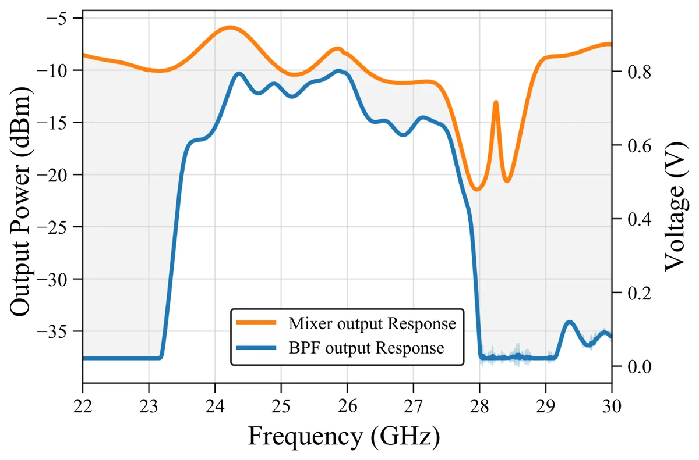

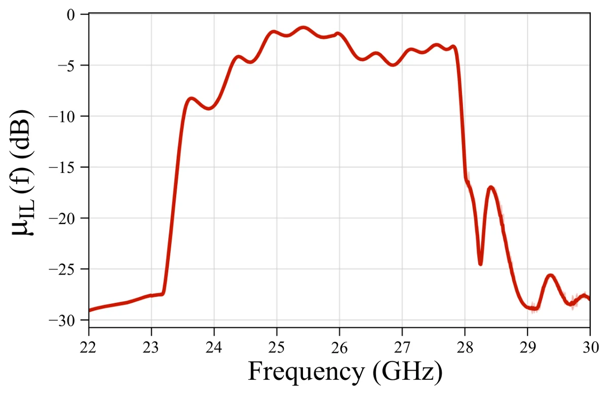
The sweep also exposed something the datasheet of the converter does not show: an attenuation dip near 28.3 GHz that comes from the board. It sits well above the detector's sensing floor and is removed by the reference measurement, but it is the kind of detail that only shows up when the hardware is measured as built.
Stressing an amplifier with a 5G waveform
For an active device the first job is to find where the testbed itself is cleanest. A two-dimensional sweep of the SDR transmit and receive gains, in 1 dB steps, gives an EVM map of the whole loop. Its minimum, 1.27%, becomes the baseline: from there, any extra distortion can be attributed to the device and not to the radio.
With that baseline fixed, the step attenuator ahead of the power amplifier is reduced one step at a time, which pushes more power into the amplifier. EVM stays low at first and then climbs past the 3.5% limit that 3GPP sets for 256-QAM.

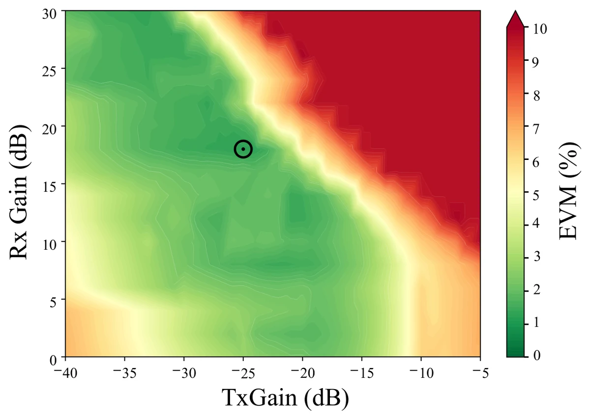

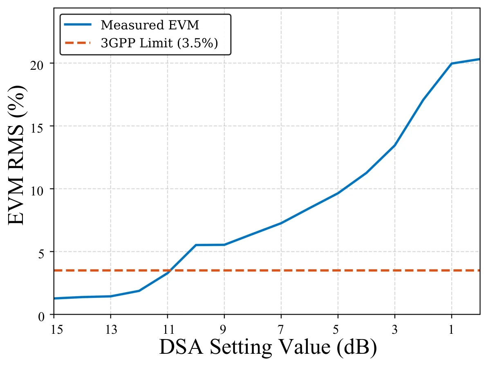
Seeing the compression itself
EVM says that the signal got worse, not how. A standard 5G receiver hides the answer, because channel equalization and common-phase-error compensation correct part of what the amplifier did. To get around that, the demodulation chain of the MATLAB 5G Toolbox was modified to tap the samples right after frame synchronization and before any equalization. Plotting those raw I/Q samples against the transmitted ones gives the AM-AM and AM-PM curves directly.

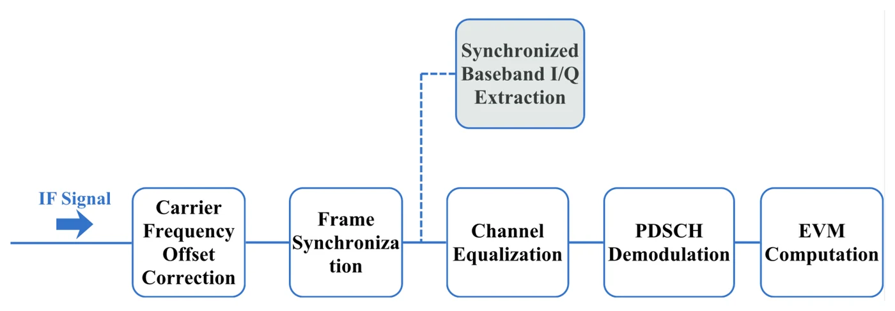

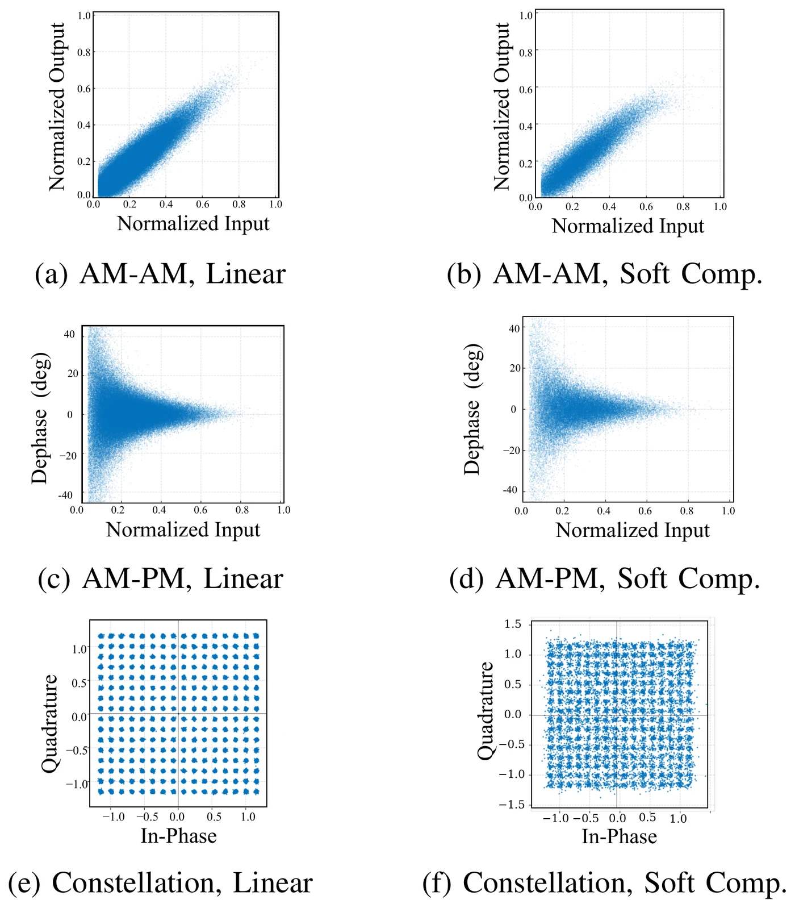
The method has a limit that the paper states plainly. At low amplitudes the phase estimate is dominated by the phase noise of the signal source, and at high amplitudes, where compression happens, the high peak-to-average ratio of OFDM leaves few samples. Compression is clear in the AM-AM curve, but the AM-PM trend could not be identified with confidence. Improving that extraction, and modeling the amplifier's memory effects for predistortion, is the next step for this line of work.
Earlier versions: 5 GHz, then 25 GHz
The bench grew in two steps before the campaign above. The first version, presented at LASCAS 2026, had no mixers: the SDR generated and analyzed a 5G NR signal at 5 GHz and characterized a two-stage amplifier chain in frequency (ACPR), time (power envelope) and modulation (EVM). It showed that a single low-cost radio could replace the generator and analyzer pair for this kind of test.
The second version, in ISCAS 2026, added the mixers and applied the same three-domain method to a 25 GHz amplifier. Sweeping transmit power and receiver gain traces a family of EVM curves shaped like a bathtub: noise dominates on the left, compression on the right, and the flat bottom, at about 1.5% EVM, marks the range of power levels that is usable for 256-QAM.

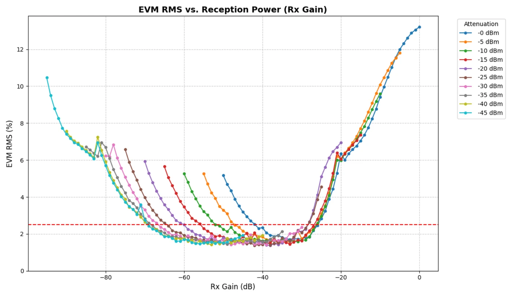

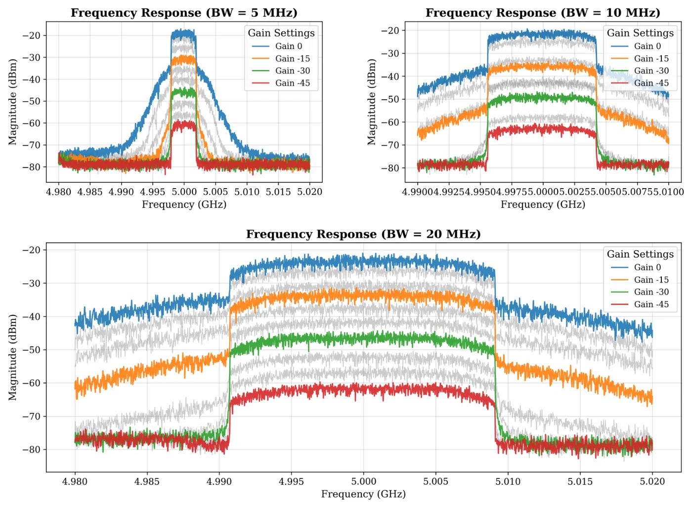
Holding the operating point
The point of lowest EVM does not stay put. Gain drifts with temperature and with the input level, and a chain built from separate modules has no built-in power control. Two of our papers close a loop around the RMS detector to keep the output where it should be.
In LASCAS 2026, a fuzzy-integral controller on an ESP32 reads the detector and adjusts a step attenuator in a 25 GHz transceiver. It settles in about one second without overshoot. With the loop active the EVM averaged 2.62%; with it disabled, a 5 dB change in attenuation raised it to as much as 3.17%.

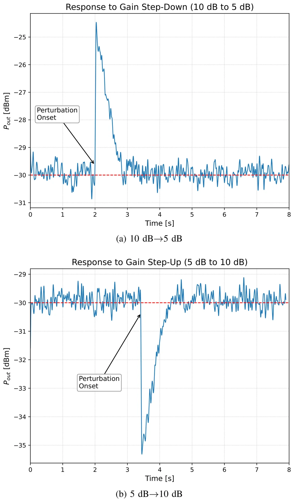
In LATINCOM 2026, the setpoint is chosen by measurement. An EVM map over transmit power and receive gain locates the minimum, about 1.2%, and the detector reading at that point becomes the reference for a deadband PI regulator running on an STM32. The step response of the loop was then used to identify the plant: the RF chain behaves as a plain gain, and the dynamics are set by the output filter of the detector. Its two time constants are 0.273 ms and 0.092 ms, and the second one can be predicted from the detector's output network to within 8% without any fitting.

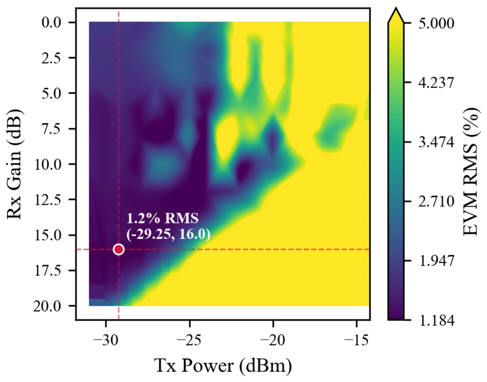

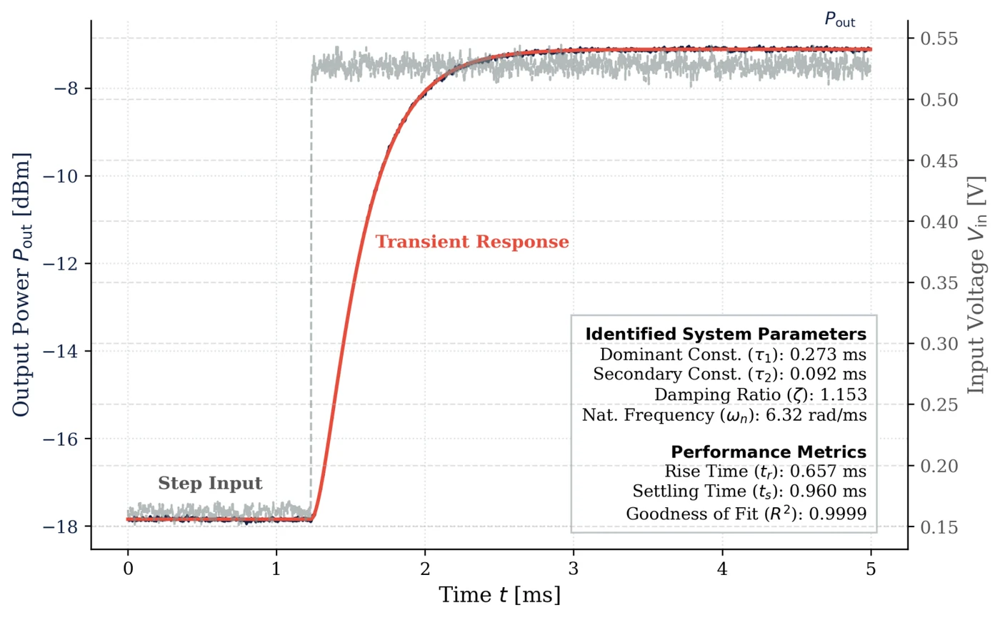
Linearizing the transmitter
The most recent paper, accepted at LAMC 2026, applies digital predistortion to the whole 5 GHz to 26 GHz transmitter. Power sweeps taken stage by stage showed that the dominant nonlinearity sits in the integrated up-conversion stage, while the IF block and the observation path stay close to linear. That matters because the receiver shares silicon with the transmitter, so its linearity has to be checked instead of assumed.
The predistorter is a memory polynomial fitted by indirect learning with regularized least squares. Three sizes were compared, with 6, 20 and 36 coefficients. Under moderate compression the 6-coefficient model performed within 0.03 percentage points of EVM and 0.14 dB of ACPR of the 36-coefficient one, so the larger models bought nothing here.

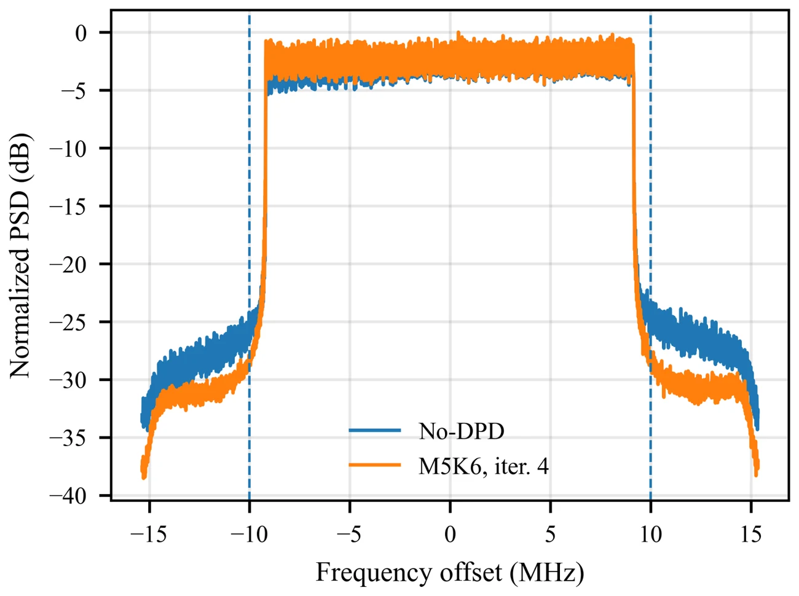
The paper's main point is about how the gain is counted. A predistorted waveform has larger peaks, so after normalization it is transmitted at lower average power, and lower power alone improves EVM and ACPR. Comparing at the same gain setting, predistortion seemed to improve ACPR by 4.31 dB; comparing at equal output power, measured with the independent RMS detector, the figure was 1.45 dB. About two thirds of the apparent improvement was back-off.
Counted at equal power over 20 paired hardware runs, predistortion improved EVM by 3.24 percentage points and ACPR by 1.36 dB on average. At the nominal operating point, EVM went from 6.47% to 2.65%, inside the 3.5% limit for 256-QAM.
What I did
- Calibrated the bench by hand: the PLL synthesizer (LMX2595), the RMS power detectors (LTC5596) and the SDR.
- Ran the measurement campaigns, first manually and then with Python and MATLAB scripts I wrote to automate acquisition and processing: raw I/Q capture, EVM, ACPR, AM-AM/AM-PM and insertion loss.
- Characterized a mmWave power amplifier under soft compression and a band-pass filter using measured data only, which became my first-author paper.
- Collected the experimental data for the minimum-EVM regulation paper and presented both LATINCOM papers in Cusco.
- Took part in the predistortion experiments on the 26 GHz transmitter.
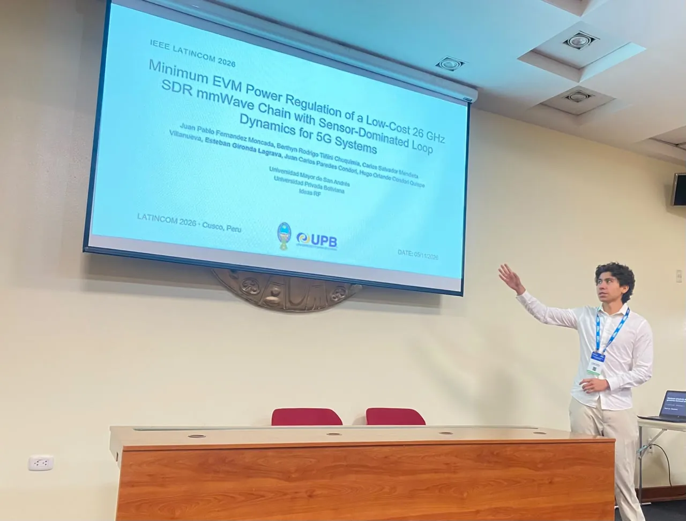
Papers from this project
Back toAll research
Next projectSAR tomography with half the acquisitions